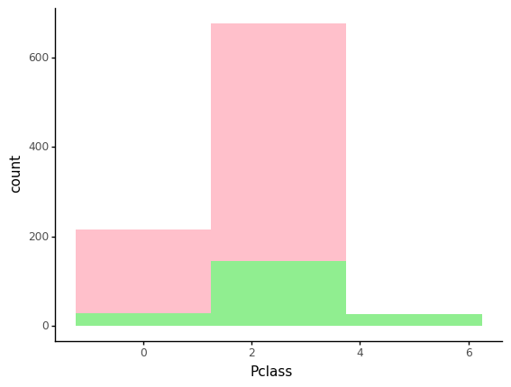
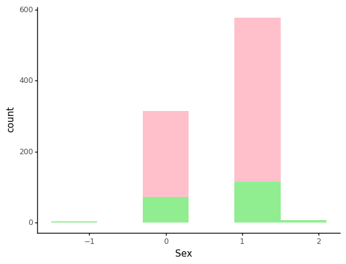
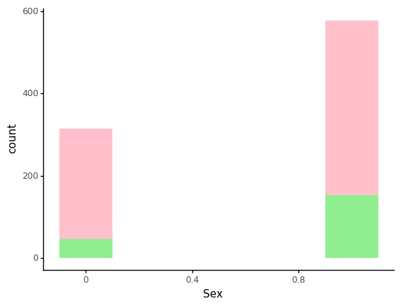

Synthetic data with SVD
Gaussian copulas
import pandas as pd
data = pd.read_csv("data/svm-hyperparameters-train-features.csv")
data
| Pclass | Sex | Age | SibSp | Parch | Fare | |
|---|---|---|---|---|---|---|
| 0 | 3 | 1 | 22.0 | 1 | 0 | 7.2500 |
| 1 | 1 | 0 | 38.0 | 1 | 0 | 71.2833 |
| 2 | 3 | 0 | 26.0 | 0 | 0 | 7.9250 |
| 3 | 1 | 0 | 35.0 | 1 | 0 | 53.1000 |
| 4 | 3 | 1 | 35.0 | 0 | 0 | 8.0500 |
| ... | ... | ... | ... | ... | ... | ... |
| 886 | 2 | 1 | 27.0 | 0 | 0 | 13.0000 |
| 887 | 1 | 0 | 19.0 | 0 | 0 | 30.0000 |
| 888 | 3 | 0 | 30.0 | 1 | 2 | 23.4500 |
| 889 | 1 | 1 | 26.0 | 0 | 0 | 30.0000 |
| 890 | 3 | 1 | 32.0 | 0 | 0 | 7.7500 |
891 rows × 6 columns
data.describe(include="all")
| Pclass | Sex | Age | SibSp | Parch | Fare | |
|---|---|---|---|---|---|---|
| count | 891.000000 | 891.000000 | 891.000000 | 891.000000 | 891.000000 | 891.000000 |
| mean | 2.308642 | 0.647587 | 29.758889 | 0.523008 | 0.381594 | 32.204208 |
| std | 0.836071 | 0.477990 | 13.002570 | 1.102743 | 0.806057 | 49.693429 |
| min | 1.000000 | 0.000000 | 0.420000 | 0.000000 | 0.000000 | 0.000000 |
| 25% | 2.000000 | 0.000000 | 22.000000 | 0.000000 | 0.000000 | 7.910400 |
| 50% | 3.000000 | 1.000000 | 30.000000 | 0.000000 | 0.000000 | 14.454200 |
| 75% | 3.000000 | 1.000000 | 35.000000 | 1.000000 | 0.000000 | 31.000000 |
| max | 3.000000 | 1.000000 | 80.000000 | 8.000000 | 6.000000 | 512.329200 |
from sdv.tabular import GaussianCopula
model = GaussianCopula()
model.fit(data)
new_df = model.sample(200)
new_df
| Pclass | Sex | Age | SibSp | Parch | Fare | |
|---|---|---|---|---|---|---|
| 0 | 2 | 2 | 23.605607 | 1 | 1 | 44.013235 |
| 1 | 4 | 1 | 3.384129 | 1 | 1 | -43.450105 |
| 2 | 2 | 0 | 27.296853 | 0 | 1 | 90.349752 |
| 3 | 2 | 0 | 36.373030 | 0 | -1 | 53.910433 |
| 4 | 3 | 2 | 64.422475 | 1 | 1 | 31.096996 |
| ... | ... | ... | ... | ... | ... | ... |
| 195 | 3 | 0 | 27.518874 | 0 | 0 | -16.231774 |
| 196 | 2 | 0 | 46.955766 | -1 | -1 | 9.692534 |
| 197 | 3 | 0 | 7.531046 | 0 | 1 | 0.424776 |
| 198 | 2 | 0 | 13.156458 | 1 | 1 | 36.901558 |
| 199 | 2 | 0 | 37.109554 | 1 | 1 | 38.468320 |
200 rows × 6 columns
from plotnine import *
from plotnine.data import *
from plotutils import *
ggplot() + geom_histogram(data=data, mapping=aes(x='Pclass'), fill=colours[0], bins=3) + \
geom_histogram(data=new_df, mapping=aes(x='Pclass'), fill=colours[1], bins=3) + \
theme_classic()

<ggplot: (8783968791845)>
ggplot() + geom_histogram(data=data, mapping=aes(x='Sex'), fill=colours[0], bins=6) + \
geom_histogram(data=new_df, mapping=aes(x='Sex'), fill=colours[1], bins=6) + \
theme_classic()

<ggplot: (8783968680150)>
model = GaussianCopula(
field_transformers={
'Pclass': 'categorical',
'Sex': 'categorical',
'Age': 'float',
'SibSp': 'boolean',
'Parch': 'integer',
'Fare': 'float'
}
)
model.fit(data)
new_df = model.sample(200)
new_df.head()
| Pclass | Sex | Age | SibSp | Parch | Fare | |
|---|---|---|---|---|---|---|
| 0 | 3 | 0 | 26.913 | 1 | 0 | 68.530 |
| 1 | 1 | 1 | 43.067 | 0 | 0 | -24.043 |
| 2 | 3 | 1 | 39.378 | 1 | -1 | 72.260 |
| 3 | 3 | 1 | 39.025 | 1 | 0 | 25.388 |
| 4 | 3 | 1 | 26.032 | 1 | 1 | 67.491 |
ggplot() + geom_histogram(data=data, mapping=aes(x='Pclass'), fill=colours[0], bins=3) + \
geom_histogram(data=new_df, mapping=aes(x='Pclass'), fill=colours[1], bins=3) + \
theme_classic()

<ggplot: (8783969227364)>
ggplot() + geom_histogram(data=data, mapping=aes(x='Sex'), fill=colours[0], bins=6) + \
geom_histogram(data=new_df, mapping=aes(x='Sex'), fill=colours[1], bins=6) + \
theme_classic()

<ggplot: (8783969309582)>